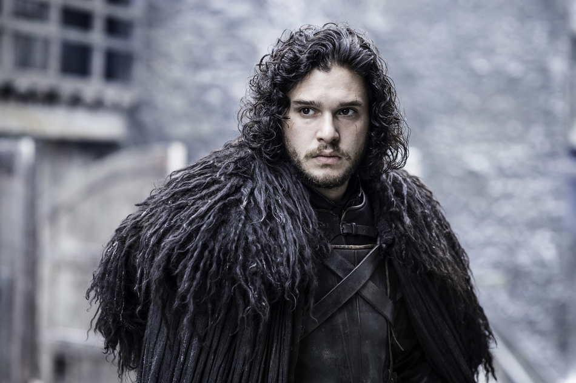
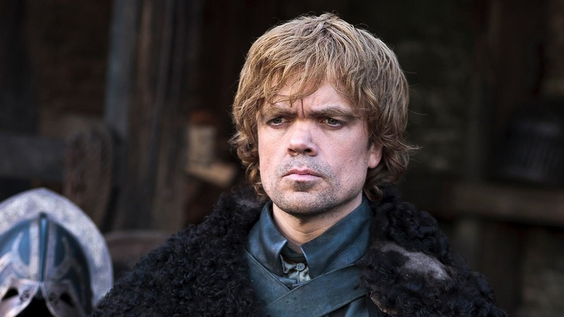
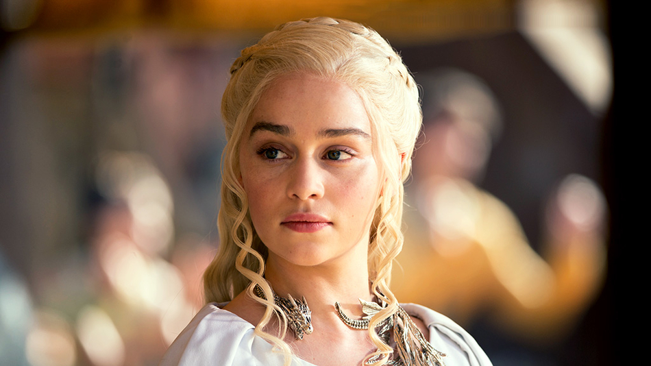

Characters
Jon Snow
Jon Snow is the bastard son of Lord Eddard Stark of Winterfell. He was a steward in the Night's Watch. Now serving on the Wall, Jon has found a place of acceptance where the circumstances of his birth are of little importance. He has a pet direwolf named Ghost, and wields the bastard sword, Longclaw, which was a gift from Lord Commander Jeor Mormont, who took Jon as his personal steward and came to see him as a surrogate son.

Tyrion Lannister
Tyrion Lannister is the youngest son of Joanna Lannister and Lord Tywin Lannister. Tywin is the head of House Lannister, the richest man in the Seven Kingdoms and Lord Paramount of the Westerlands. The Westerlands are one of the constituent regions of the Seven Kingdoms and House Lannister of Casterly Rock is one of the Great Houses of the realm. He is the younger brother of Jaime and Cersei Lannister. His mother Joanna Lannister died giving birth to him. His father and sister hold him in contempt as they blame him for the death.
He is a dwarf, causing him problems and persecution. His size has led him to being referred to derisively by various names, such as "the Imp" and "The Halfman". This is mitigated by his intellect and his family's wealth and power. Had an infant with dwarfism like Tyrion been born a commoner, he'd have simply been left out in the woods to die. However, Tyrion was born into a powerful noble House, and was therefore spared. Even though his father doesn't think much of him, he has had the benefits of being raised with wealth and education, and is expected to lead his life as a credit to the Lannister name.

Daenerys Targaryen
Daenerys Targaryen is one of the last confirmed members of House Targaryen. She is the younger sister of Viserys Targaryen and the youngest child of King Aerys II Targaryen, who was ousted from the Iron Throne during Robert's Rebellion. She becomes the heir of the Targaryen dynasty after her brother's death and plans to reclaim the Iron Throne herself, seeing it as her birthright.